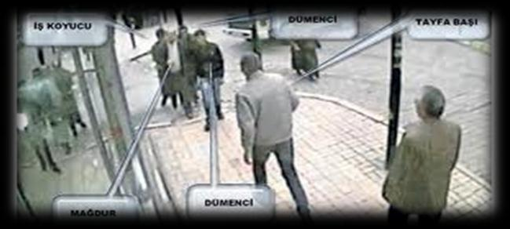
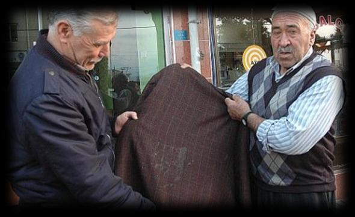

a. Suçlu Profili
Malvarlığına yönelik işlenen suçların büyük kısmı çocuk suçlular tarafından işlenmektedir.
Çocuklar hakkında yakalama, gözaltına alma ve ifade alma işlemleri ile ilgili yasalar gereği bazı kısıtlamaların varoluşu, yaş durumuna göre ceza ehliyetlerinin olmayabilişi veya cezaların indirimli oluşu, çocuk suçlular açısından suçu yinelemesi için cesaret unsuru oluşturmaktadır.
25
Uzak şehirlerden kaçarak veya kaçırılarak getirilen veya ailevi nedenlerden dolayı evsiz kalan bu çocuklar, büyükler tarafından suçlara zorla veya isteyerek sürüklenmekte ve organize bir şekilde suç işlemektedirler.
Şüphelilerin kabarık suç geçmişleri olduğu, aynı suçlardan birçok kere yakalandıkları, ilk defa hırsızlık suçunu işleyen suçlunun sonraki aşamalarda oto hırsızlığı veya kap-kaç suçlarını işleyebildiği görülmektedir. Cezaevinde tanışmış olduğu arkadaş gruplarından öğrendiği yeni yöntemlerle ilerleyen zamanlarda daha organize ve profesyonel suçlara karışmaktadırlar.
Suçluların yaşam tarzları incelendiğinde büyük çoğunluğunun ailelerinden uzak, semtin varoş
kesimlerinde, metruk binalarda yaşadıkları, madde bağımlısı oldukları anlaşılmaktadır.
Dolandırıcılık suçu özel bir beceri gerektirdiğinden, suçun işleniş şeklinin öğrenilmesinde usta çırak ilişkisi önemli rol oynar. Dolandırıcılık suçunu işleyenler, daha önce dolandırıcılık suçunu işlemiş
kişilerden bu suç türünü öğrenmektedir.
Dolandırıcılık türüne göre suçlu profili değişmekle beraber çevresel ve sosyo-ekonomik faktörler profilin oluşmasında belli başlı etkenlerdendir. Bununla beraber:
Kolay yollardan kazanç elde etmeyi severler.
Toplum tarafından kabul edilmiş ahlaki değerlere uymazlar.
Kamu görevlilerine karşı saygılı gözükürler.
Birbirlerine iftira atabilirler.
Genellikle suç faili erkekler olmakla birlikte bayanlara da rastlanmaktadır.
25 ile 50 yaş aralığındadırlar.
Bulunduğu şehre ve yapacağı işe göre giyim tarzlarında değişir.
Lüks yaşama hevesi vardır, bol para harcamayı severler.
Komşuluk ilişkilerinin zayıf olduğu lüks semtlerden veya sitelerden ev tutarlar.
Bilişim sistemlerini iyi düzeyde kullanırlar.
Kimlik bilgilerini gizli tutmak maksadıyla başkaları üzerine kayıtlı telefon hatlarını kullanırlar.
Mağdurlara daha fazla para kazanacakları vaadinde bulunurlar.
İyi giyinimlidirler.
Güzel ve etkili konuşurlar.
İnsanları çabuk ikna ederler.
Çok ve hızlı konuşurlar.
Soğukkanlıdırlar.
İyi rol yaparlar.
Hareketleri rahat ve güven vericidir.
Çoğunlukla yalnız değildirler, ekip halinde çalışırlar.
26
Dolandıracakları insanları önceden gözetlerler, plan ve program yaparlar.
İnsanların dini duygularını kullanırlar.
Genellikle sahte kimlik kullanırlar.
İnsanların güvenini kazanmak için defalarca alışveriş yaparlar.
Dürüst, güvenilir insan imajını verene kadar gerekirse 1 yıl beklerler.
İyilik yaparlar.
Eğer büyük miktarda para dolandıracaklarsa 6-7 ay hatta 1-2 yıl senaryolarına devam ederler.
Dolandırıcıların en önemli sermayesi konuşmalarıdır.
Yalan söylediklerini anlamak neredeyse imkânsızdır.
Son derece sakindirler; rollerini öyle ustalıkla yaparlar.
Profesyonel dolandırıcılar aynı zamanda sabırlı olurlar.
Konuşurken güvensizlik belirtileri, heyecan, telaş göstermezler.
Genellikle kendi adlarına şirket ya da işyeri açmazlar.
Üzerlerine genelde taşınmaz, gayrimenkul, arsa, araba almazlar.
Kartvizitlerinde kendilerini şirket ortağı, holding patronu, ithalat-ihracat yapan iş adamı gibi gösterirler, kullandıkları arabalar büyük ihtimalle kiralıktır.
Genellikle eğitimsiz, parayı seven, açgözlü, kendini uyanık gören insanları eğlence ve yemeklere götürerek kandırırlar.
İşi aceleye getirip mağdura düşünme ve araştırma zamanı veriyormuş gibi davranıp gerçekte bu zamanı vermezler.
Gösterişli arabalara binebilir, şık giyinebilir, iyi bir yerde ofis tutabilirler.
Mağdurların samimiyetinden ve duygusal durumundan faydalanırlar.
b. Mağdur Profili
Dolandırıcılık türüne göre mağdur profili farklılık arz etmektedir.
Kontör dolandırıcılığında iyi eğitimli, yüksek statülü, memur, zengin kişiler de dahil olmak üzere her kesim insan mağdur olabilirken, ATM dolandırıcılığında yaşlılar, fal bakma dolandırıcılığında ev hanımı bayanlar, kredi kartı ve oto dolandırıcılığında herkes, evlenme vaadiyle dolandırıcılıkta ise genç, bekar erkekler bu suçun mağduru olabilir.
Diğer yandan dolandırcılık suçu mağduru kimselerin büyük bir kısmı ‘ava giderken avlanan’
lardır. Uyanık geçinen, açgözlü, para düşkünü insanlar bu suçun mağduru olmaktadır.
27
a. Polis Açısından
Dolandırıcılık suçlarının büyük bir kısmının polis tarafından önlenmesi oldukça zordur. Bunun sebebi olay ilişkisinin dolandıran ve mağdurun karşılıklı rızasına dayanarak kurulması, olayın dışarıdan üçüncü kişilerin müdahalesine kapalı olmasıdır.
Dolandırıcılık suçlarının en çok işlendiği saatlerde ve mekanlarda uygulama yapılması fayda verir.
Suçun en çok işlenen yer ve zaman bilgisi yapılacak analizler sonucu ilgili projelerden istifade edilerek belirlenmelidir.
Özellikle para/kontör dolandırıcılarına karşı paranın çekildiği ATM çevresinde uygulamalar yapılmalı, güvenlik tedbirleri artırılmalıdır.
Her dolandırıcının ekseriyetle sadece kendi yöntemini kullanıp diğer yöntemlere başvurmamasından bahisle sabıkalıların tanınması ve kontrol altında tutulması gerekebilir.
Halkı bilinçlendirici her türlü faaliyetlerde bulunulmalıdır.
Ayrıca planlı operasyonlarla dolandırıcılık şebekelerine vurulacak darbenin de önleyici bir tedbir olduğu unutulmamalıdır.
b. Vatandaş Açısından
Doladırıcıların sermayesi dili olduğundan iyi niyet göstererek üzerinde bulunan eşya ve paranın alınmasına müsaade edilmemelidir.
Kimlik kartları kaybedildiğinde vakit geçirmeksizin Nüfus Müdürlüklerine başvurulup yenisi çıkartılmalıdır.
*Kimlik kartları kaybedilidiğinde üzerine şirket açılıp açılmadığını, kredi veya kredi kartı alınıp alınmadığını, suç işlenip işlenmediğini öğrenmek için maliyeye, bankalara veya polis merkezlerine müracaat etmeye gerek yoktur. Bu kurumlar ve toplam 81 kamu kurumu Kimlik Paylaşım Sisteminden Nüfus Bilgilerini Sorgulama ve Doğrulama hizmetlerini kullanabildiğinden meydana gelebilecek zararlardan işlemi yapan kurum sorumlu olacaktır.
Kimlik bilgileri tanınmayan kimselerle paylaşılmamalıdır.
Kimlik kartı fotokopisi lazım olduğunda üzerine ‘belirtilen işlem için bir defaya mahsustur’
şeklinde el yazsıyla not düşülmelidir.
Tanınmayan ülke paraları karşılık olarak kabul edilmemelidir.
Kendisini polis, asker, savcı veya görevli olarak tanıtan kişilerin mutlaka kimlik kartlarına bakılmalıdır.
Telefonla arayıp kendisini polis veya savcı olarak tanıtan sim kartının kopyalandığı, o numaradan albay eşinin rahatsız edildiği, hesaplarının terör örgütleri tarafından ele geçirildiği 28
gibi bahaneler sunan kişilere inanılmamalı, talepleri yerine getirilmemelidir. Unutulmamalıdır ki; polis vatandaştan kontör veya para istemez.
Kredi kartı ile internet üzerinden ancak güvenilir sitelerden alışveriş yapılmalıdır.
Kredi kartı numarası, şifresi ve kart arkasında yer alan 3 haneli güvenlik kodu kimseyle paylaşılmamalıdır.
Kredi kartı POS makinesinden geçirilirken yanında bulunulmalıdır.
Bir yere geçici olarak bırakılan veya emanet edilen eşya için fiş alınmalıdır.
Alışverişler mümkünse yazılı olarak yapılmalıdır.
Mülkün satışı hemen yapılmayacaksa vekaletname verilmemelidir.
ATM’lerden para çekerken banka görevlileri haricinde kimseden yardım istenmemeli, kartın şifresi banka görevlileri de dahil kimseye söylenmemelidir.
Kart geri alınmadan ATM terk edilmemeli, cihaz kartı geri vermezse ATM nin yanından ayrılınmamalı, çevredekilerden banka görevlilerinin gelmeleri için rica edilmelidir.
Altın ve döviz ancak kuyumcudan alınıp satılmalıdır.
Araç satın alırken motor ve şase numaralarından kontrol ettirilmelidir.
Paranın ödenmesi ile devir yapılması mümkün olduğunca aynı anda yapılmalı, araç satılana kadar yanından ayrılmamalıdır.
İnternet üzerinden beğenilen araç için kapora ödenmemelidir.
Bir yerde gömü veya define olduğunu bildirenlere –asker arkadaşı olsa dahi- itimat edilmemeli, yapılacak masraflar için para verilmemelidir.
Evlenme vaadiyle yurt dışından veya yurt içinden arayanlara para gönderilmemelidir.
Tanınmayan kimselerin hayır, yardım talepleri kabul edilmemeli, bilinen kimseler aracılığıyla hayır yapılmalıdır.
Kendisine iş bulacağını, çalışmak için yurt dışına götüreceğini söyleyenlere para verilmemelidir.
Fal bakmak, büyü bozmak için evin içerisine kimse davet edilmemelidir.
Eksik para verildiğini söyleyenlere karşı dikkatli olunmalı, verilen miktar biliniyorsa itiraz edilmeli, hala sonuç alınamadıysa polis imdat (155) aranmalıdır.
*Bunlarla beraber zaten hak edilmeyen bir menfaat para hırsı, açgözlülük, uyanıklık yapılarak elde edilmeye çalışmamalıdır.
B. YANKESİCİLİK
Halkın yoğun olarak bulunduğu alışveriş merkezlerinde, semt pazarlarında, otobüs terminallerinde, erkeklerin ceplerinden bayanların omuz çantalarının içinden para ve değerli eşyalarının kalabalıktan faydalınarak fark ettirilmeden alınması Türk Ceza Kanununda elde veya üstte taşınan eşyayı özel beceriyle almak olarak tanımlanmıştır. Bu suçu işleyenler ellerinde hafif bir eşya 29
(gazete, kazak, ceket) dışında bir şey taşımazlar.Belirtilen yerlerde mağdurun dikkatinin dağıldığı veya dikkatinin bir yere yoğunlaştığı zamanı seçerler veya mağdurun dikkatini dağıtarak çalma işlemini gerçekleştirirler. Bir veya birden fazla kişiyle hareket ederler, genellikle psikopat yapılıdırlar ve kendi kendilerini jiletle kesme eğilimleri vardır ve kesici alet taşırlar ve çaldıktan sonra hemen olay yerini terk etme düşüncesindedirler.
Alışveriş merkezlerinde, pastanelerde, piknik alanlarında, bayan kuaförlerinde, düğün salonlarında, lokantalarda, kapısı açık bırakılan otolarda ve kuyumcularda yapılmaktadır.
Bu gibi yerlerde bulunan kişilerin, içerisinde para ve mücevherlerin bulunduğu çanta, cüzdan ve cep telefonlarını bulundukları yerin içerisinde masanın üzerine veya alışveriş arabalarının içerisine bıraktıkları bu esnada alış verişe veya muhabbete daldıkları anda çanta, cüzdan ve cep telefonlarını unuttukları art niyetli insanların bu durumdan istifade ederek çanta, cüzdan ve telefonları çaldıkları , vatandaşların bu olayı daha sonra fark ettikleri bir hırsızlık türüdür.
Yankesicilik suçu, el çabukluğu ve özel bir beceri ile kişinin üzerinden, bedeni veya bedeni ile doğrudan doğruya bağlantılı yerden hissettirmeden para veya değerli eşyasının çalınmasıdır.
*Yankesicilik Türk Ceza Kanunu’nda ayrı olarak tanımlanmış bir suç değildir. Hırsızlığın nitelikli halidir.
Yankesiciler halkın yoğun olarak bulunduğu yerleri (çarşı merkezleri, semt pazarları, hastaneler, toplu taşıma araçları) tercih etmektedirler.
Genellikle mağdurun dikkatini dağıtan hareketler yapmak, bir tarafına çarpmak, lafa tutmak, sarılmak, üstünü aramak, önünde kavga yapar görünürken üzerine abanmak şeklinde işlenmektedir.
Bu suçu işleyenlerin el becerileri konusunda kabiliyetli oldukları, kabiliyetlerini bu yönde geliştirdikleri, dalgın, yaşlı olan mağdurları seçtikleri gözlemlenmiştir.
Bu yöntemle kolay para kazanan yankesicilerin, bu işi gayri meşru bir meslek haline getirdikleri, çaldıkları malzemeleri nakit paraya çevirdikleri ve günübirlik olarak harcadıkları gözlemlenmiştir.
1. TCK’DA YANKESİCİLİK SUÇU
Türk Ceza Kanunu’nun 142. Maddesinin 2. Fıkrasının b bendinde yankesicilik suçuna ‘Elde veya üstte taşınan eşyayı çekip almak suretiyle ya da özel beceriyle işlenmesi halinde üç yıldan yedi yıla kadar hapis cezasına hükmolunur.’ şeklinde yer verilmiştir.
30

